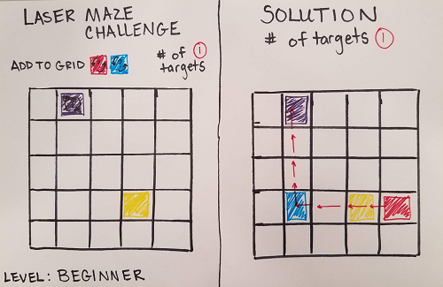

Extend Yourself
 Solve a Challenge Card
Solve a Challenge Card
Now that you have practiced directing the laser to the target, you can try to solve the challenge cards. There are 60 challenge cards that range from beginner, intermediate, advanced, to expert. Each card has the number of targets and pieces you will need to use on the front of the card and the solution on the back. Try to use all the pieces and place them on the grid. For tips see the ThinkFun Laser Maze Instruction Manual
Create Your Own Challenge Card
Create your own challenge card by drawing the game board, make a list of the pieces needed, and choose a starting point to place the laser. On the reverse side of the card, create the solution to your puzzle. Invite your friends to solve your challenge. Don't forget to rank your challenge for beginner, intermediate, advanced, or expert!
